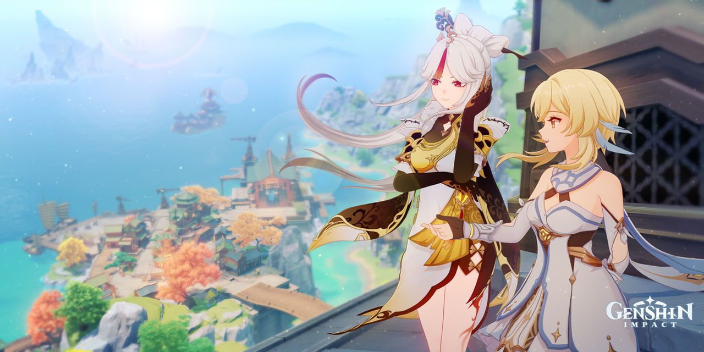

GENSHIN IMPACT
Genshin Impact es un videojuego de rol de acción de mundo abierto y gratuito, con una mecánica de monetización de gacha para conseguir elementos adicionales como personajes especiales y armas.

Jugabilidad
La principal característica de Genshin Impact es su sistema de elementos, y en Teyvat existen siete: anemo (viento), pyro (fuego), electro (trueno), hydro (agua), cryo (hielo), dendro (planta) y geo (roca). Los jugadores pueden aprovechar este sistema y usar combinaciones para causar daños mayores a los enemigos y así completar las misiones. No obstante, el uso de elementos presenta más características: Por ejemplo, la habilidad de pyro puede destruir el escudo de madera de un enemigo haciéndolo arder o la habilidad de cryo puede congelar el agua para poder caminar encima.